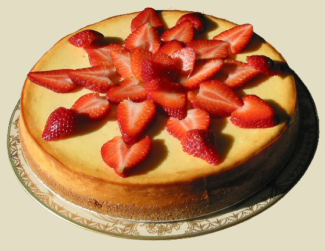

Chantal's New York Cheesecake

Description
We will make 12 servings.
It will take 7 hrs 30 minsus total (30 mins prep., 1 hr cooking, 6 hrs cooling).
You will need one 9-inch springform pan.
Nutrition facts (per serving): 533 calories; protein 10.3g;
carbohydrates 44.2g; fat 35.7g; cholesterol 158.9mg; sodium 380.4mg
Ingredients
- 15 graham crackers, crushed
- 2 tablespoons butter, melted
- 4 (8 ounce) packages cream cheese
- 1.5 cups white sugar
- 3/4 cup milk
- 4 eggs
- 1 cup sour cream
- 1 tablespoon vanilla extract
- 1/4 cup all-purpose flour
Steps
- Preheat oven to 50 degrees F (175 degrees C). Grease a 9 inch springform pan.
- In a medium bowl, mix graham cracker crumbs with melted butter.
Press onto bottom of springform pan.
- In a large bowl, mix cream cheese with sugar until smooth.
Blend in milk, and then mix in the eggs one at a time, mixing just enough to incorporate.
Mix in sour cream, vanilla and flour until smooth. Pour filling into prepared crust.
- Bake in preheated oven for 1 hour.
Turn the oven off, and let cake cool in oven with the door closed for 5 to 6 hours;
this prevents cracking. Chill in refrigerator until serving